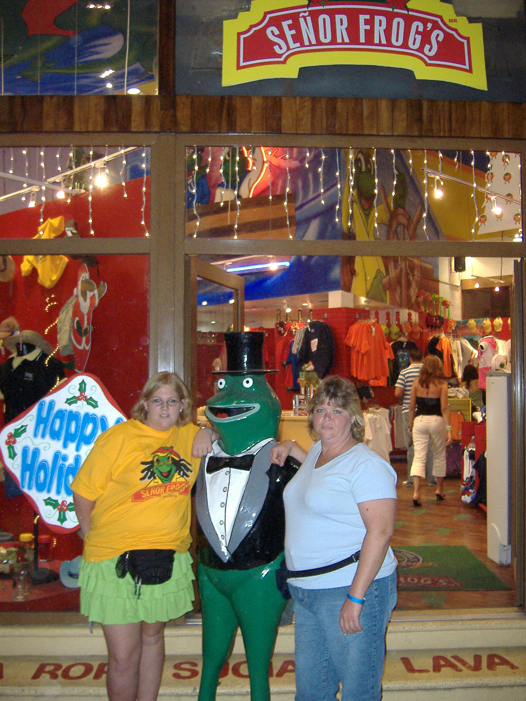
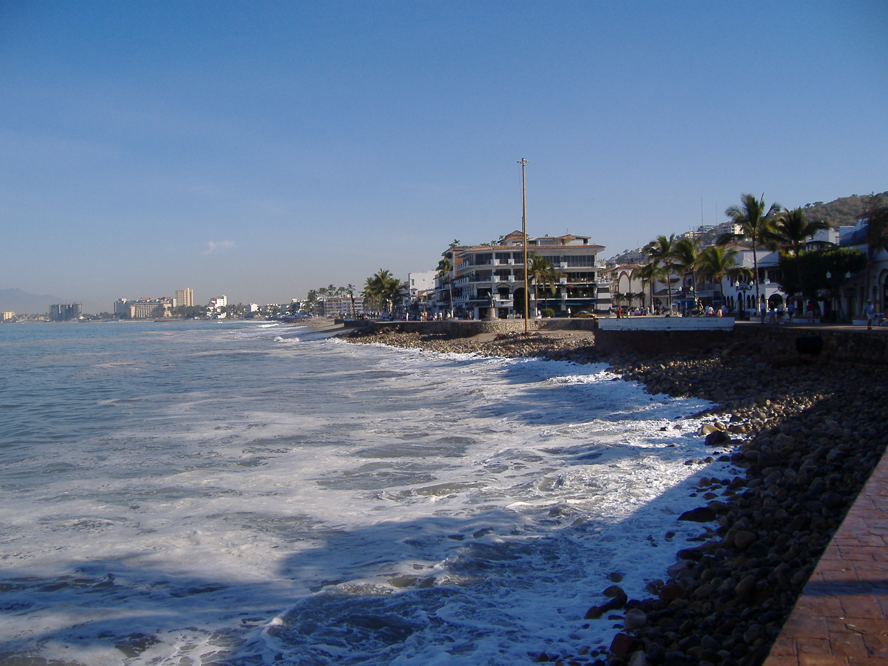
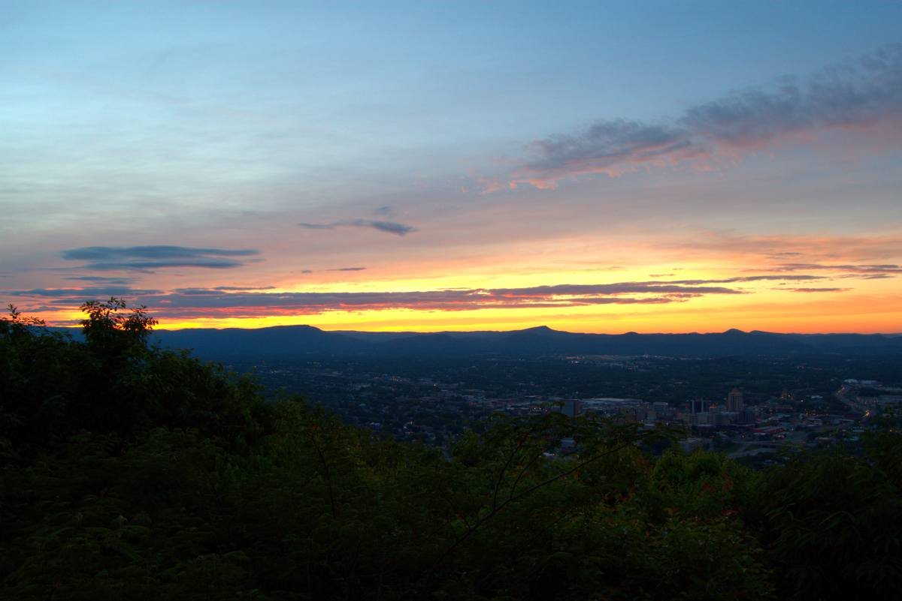
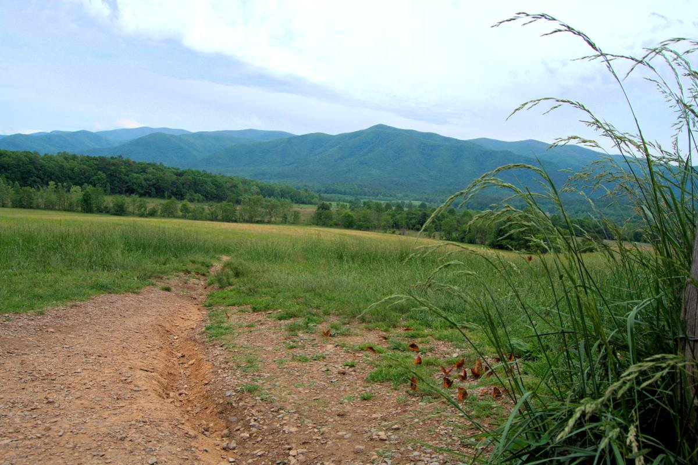
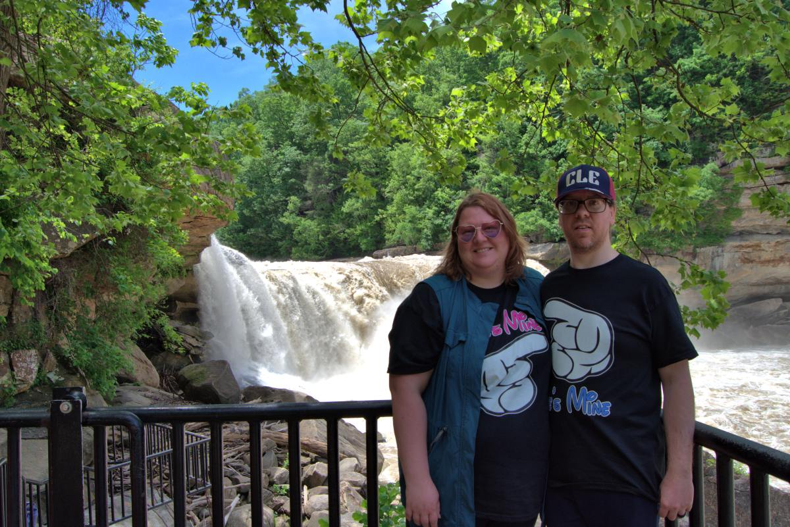
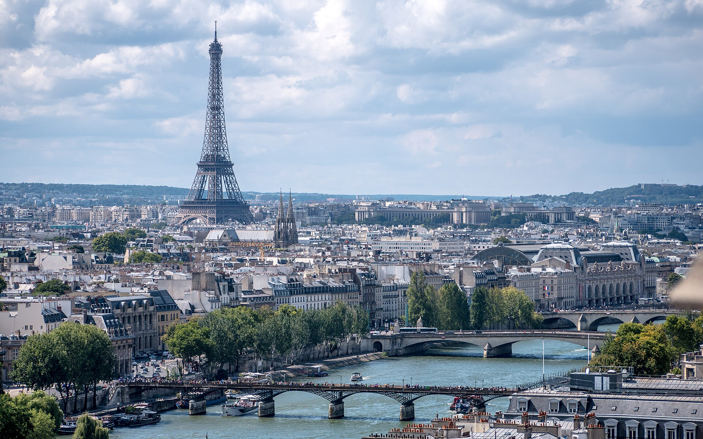

I have a list of places to visit. I also have been to quite a few places. In 2005 for Christmas, my family decided we needed a break and went to Puerto Vallarta, Mexico.
I can't say I had more fun shopping, swimming in the ocean, or drinking at age 15. I attempted scuba diving with my parents. We did lots of shopping, We went to a bar and had a foam party.
One day we spent out fishing and the locals cooked our fish for us. My Great Aunt Sharon and Great Uncle Carl met us down in Puerto Vallarta. They would spend half the year in Bucerias, Mexico.
The first two images are in Puerto Vallarta, Mexico.
My senior year of High School, I spent with my dad truck driving. I helped him by finding the orders and unloading windows for each location we went. I don't have any pictures with me. We went through Minnesota, North Dakota, Montana, Idaho, Wyoming, Utah, Colorado, Texas, New Mexico, Oklahoma, Kansas, Missouri, Nebraska, Iowa, and the Upper Penninsula of Michigan. Growing up, I seen most of Wisconsin, part of Minnesota, Illinois, and Indiana for family reunions. In 2009, we moved to Las Vegas, Nevada. I added California and Arizona to my list. I spent three months in Vegas before I decided I had enough and I drove myself back in my car with my belongings and wide open roads. I think my favorite state is still Colorado by Denver. It's absolutely beautiful there.
In 2022, many years later, I added Michigan and Ontario, Canada to my list. I moved to Windsor in April 2023. We delayed our honeymoon until last May 2025. We spend the first year married, and did travel to Toronto and Niagara Falls twice. Once we could do our honeymoon trip we went on a very large roadtrip. We started in Ohio, watched a baseball game in Cleveland. Made our way through Pennsylvania to West Virginia and spent the night. We wanted to see Blackwater Falls State Park in Davis, WV.
Afterwards, we managed to get the greatest sunset view of Roanoke, Virginia on our way through North Carolina into South Carolina.
Once we got to South Carolina, we spent a few days in Myrtle Beach.
One of the days we went to Charleston, SC. We even went on a carriage ride through town.
On our way to Tennessee, we stopped in North Carolina once more for some real gold panning.
The third image with the sunset is from Mill Mountain Star in Roanoke, Virginia.
Pigeon Forge, TN was eventful. We did the 11-mile Cades Cove loop in the Smoky Mountains. We got to see a copperhead rattlesnake go right by our vehicle and several black bears along the drive.
My husband was excited about seeing the Titantic Museum in Pigeon Forge. Once we left, we made our way towards home.
We stopped in Kentucky at the Great Saltpetre Cave Preserve which is only open to the public once per year.
The fourth image is a picture in Cades Cove Loop, Tennessee. Followed by image five; our trip to see Cumberland Falls in Kentucky.
We eventually made it back into Indiana after a long trip to see my Great Aunt Kathy. That was a surprise we didn't expect, they told my relatives who I hadn't seen since 2011 family reunion we were coming. I got to introduce my husband to her children. Her children (second cousins) Matt and wife Cindy, Mark and wife Cindy, Pam and husband Ian, (third cousin) Taegan, and her little boy (fourth cousin) Cairo.
We do plan to see Paris, France one day. That list might as well be the backpacking of Europe trip. I have family still in Sicily, Italy.
My husband has family still in Germany. We both did ancestry and know most of our family roots also wrap around places we want to visit one day.
I would like to see Italy, France, Germany for my husband, United Kingdom, and Ireland. My husband wants to see China or Japan also.
Currently his list, a bit closer to home, is scratching off every major league baseball field. He's gone to several over the years.
The last image I added was Paris, France.